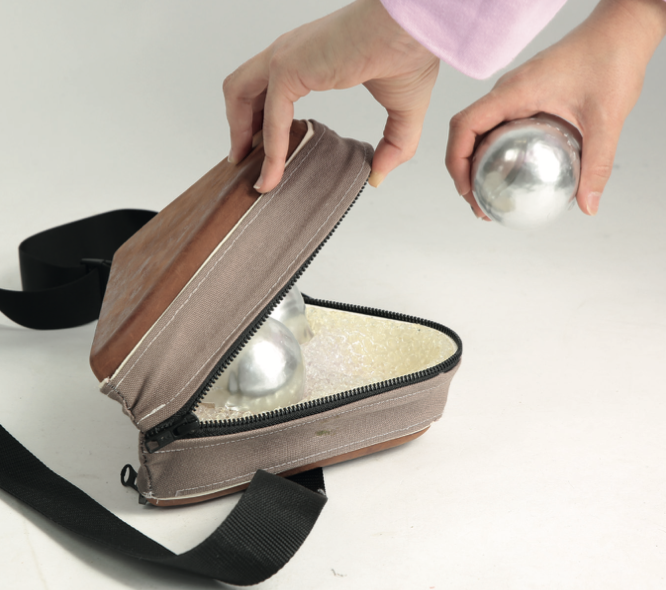

Bangtang
Bangtang es un set de petanca moderno creado en colaboración con Adidas. Inspirado en la tradición, redefine este clásico juego con un diseño fresco y deportivo, fusionando lo mejor del diseño tradicional y contemporáneo.



Detalles Técnicos
- Materiales: PLA, resina, cuero y algodón.
- Dimensiones: 10 cm diámetro (bolas).
- Proceso: Prototipado y fabricación industrial con diseño modular.
Lo que dicen sobre el proyecto
"Una mezcla perfecta entre lo clásico y lo moderno, un diseño innovador que revive un juego tradicional."